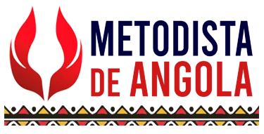

Trabalhos escolares como nunca antes
Transforme sua visão de mundo em trabalhos que tens orgulho de defender.
Confiado por estudantes de

Do tema ao trabalho
Dê o tema, explique o que pensas, a Dookia entende, organiza e constrói o conteúdo.
Defender ficou muito mais fácil
As ideias são suas, então lembrar já não será um problema. Tabalhos difíceis ganham exemplos mais próximos da sua realidade para serem mais fáceis de entender.
E podemos provar
+11k estudantes já fazem com a Dookia
E relatam melhor entendimento das matérias, elogio de professores e notas significativamente mais altas.
Um trabalho pronto para cada desafio
No teu ritmo, do tema à defesa.
Colabora com colegas no mesmo documento.
Perguntas frequentes.
O essencial antes de criar o seu trabalho.
Como funciona a Dookia?
Descreva o tema e a sua visão sobre ele. A Dookia organiza as ideias e devolve o trabalho estruturado, pronto para rever.
É grátis para começar?
Sim. Pode criar o primeiro trabalho sem pagar e só depois decidir se quer continuar.
Que tipos de trabalho posso criar?
Redações, trabalhos de História, Química e outras disciplinas, com estrutura, conteúdo e formato de entrega.
Vou conseguir defender o trabalho?
Sim. O conteúdo usa exemplos próximos da sua realidade e pode incluir um roteiro simples para a apresentação.
Como recebo o trabalho final?
Em texto organizado e PDF pronto para entregar, com estrutura de introdução, desenvolvimento e conclusão.
Posso criar com colegas?
Pode desenvolver as suas ideias sozinho ou colaborar com colegas no mesmo trabalho.
Comece seu próximo trabalho agora.
Uma página em branco nunca mais. Descreva e entregue.